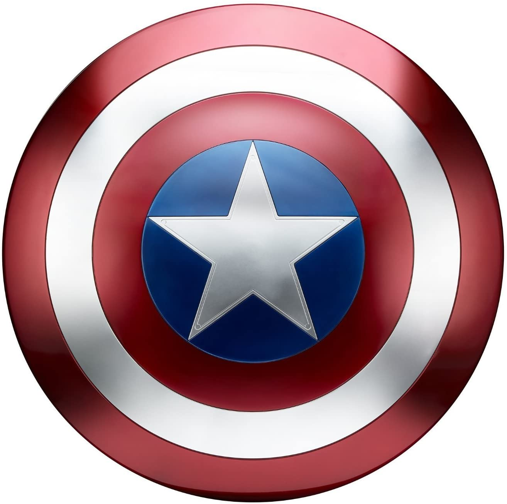

Captain America's shield is a fictional weapon appearing in American comic books published by Marvel Comics. It is the primary defensive and offensive piece of equipment used by Captain America, and has become emblematic as an American symbol in its own right. Over the years, Captain America has used several shields of varying composition and design. His original heater shield first appeared in Captain America Comics #1 (March 1941), published by Marvel's 1940s predecessor, Timely Comics. The circular shield best associated with the character debuted in the next issue, Captain America Comics #2.